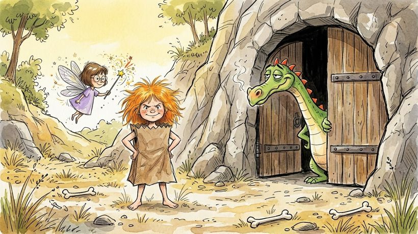
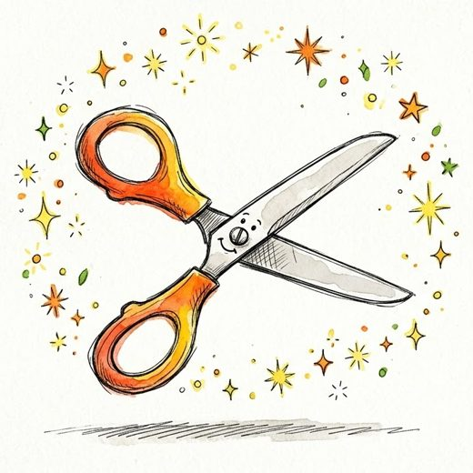
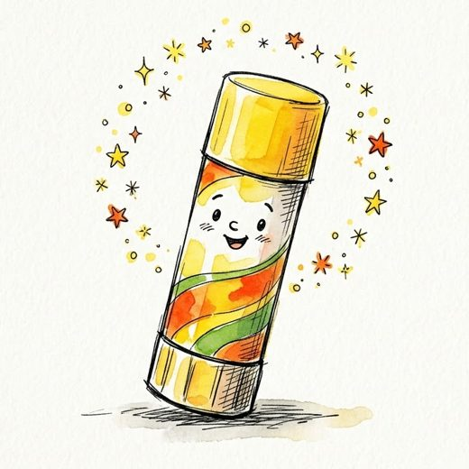
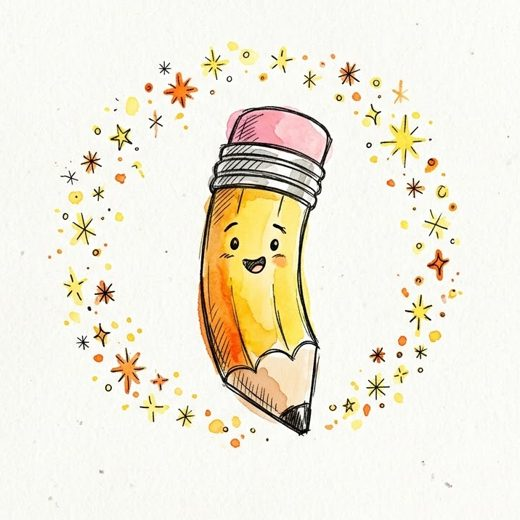
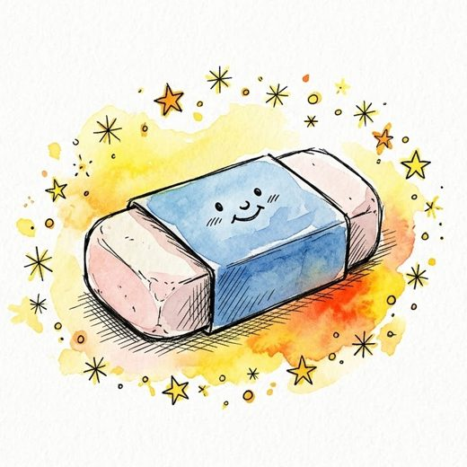

3학년 영어 · Lesson 7 I Have a Pencil · Story Land 역할극 학습지
종이 봉지 공주의 왕자 구출 대작전
3학년반번이름모둠
오늘의 핵심 표현Do you have scissors?Yes, I do. / No, I don't.I have an eraser.

1
공주를 도운 학용품, 따라 쓰고 혼자 써 봐요
회색 글자를 따라 쓰고,
아래 빈 줄에 혼자 써요.

scissors가위
scissors

a glue stick풀
a glue stick

a pencil연필
a pencil

an eraser지우개
an eraser
Do you have a glue stick?
Yes, I do. I have an eraser.
마지막 줄에는 내가 가진 학용품으로 I have ______. 문장을 써요.
2
요정의 마법 가방! 대화를 완성해요
O 가방에 있어요 · X 가방에 없어요
O
공주 Do you have ?
요정 , I .
O
공주 Do you have ?
요정 , I .
X
공주 Do you have ?
요정 , I .
O
공주 Do you have ?
요정 , I .
낱말 상자 scissorsa glue sticka pencilan eraserYesNododon't